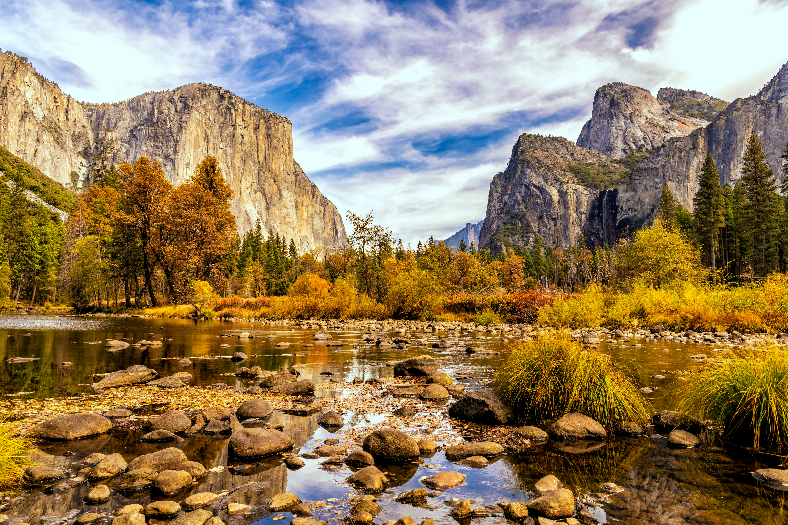

Santa Monica
Santa Monica is famous for its beach, pier, ocean views, and relaxed California atmosphere.
Discover some of California's most beautiful destinations.
California offers beautiful beaches, national parks, mountains, cities, and unforgettable landscapes.
Santa Monica is famous for its beach, pier, ocean views, and relaxed California atmosphere.

Yosemite is known for spectacular mountains, waterfalls, forests, and dramatic natural landscapes.
Big Sur offers breathtaking coastal views and one of California's most scenic road trips.
San Diego combines beautiful beaches, sunshine, parks, and a lively coastal city atmosphere.
Los Angeles is known for its beaches, palm trees, entertainment, and exciting city atmosphere.